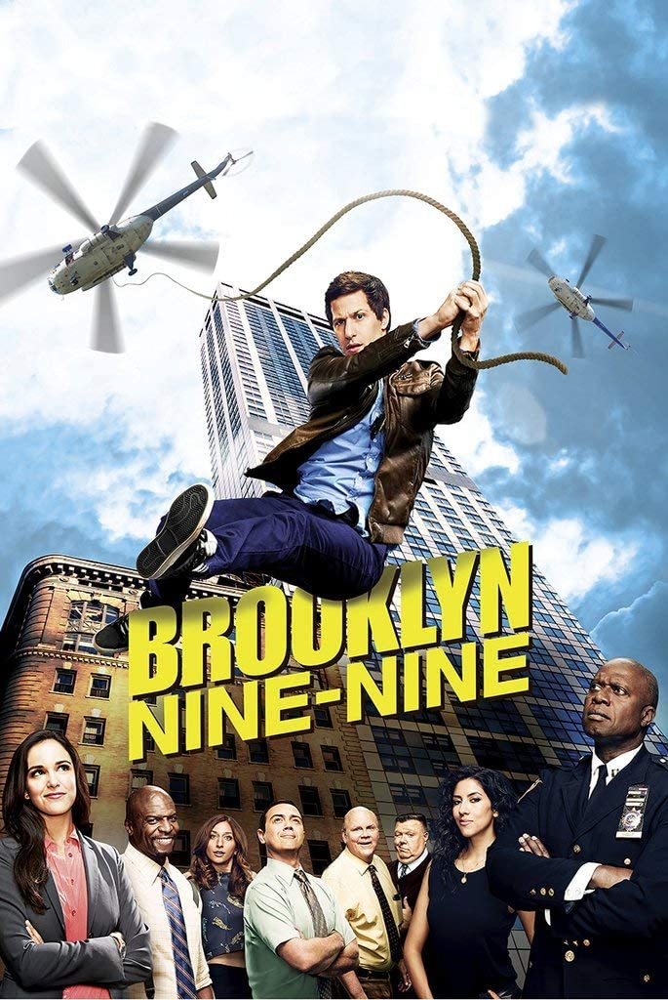

| Sinopsis | |
|---|---|
|  |
La serie sigue las aventuras de un grupo de detectives de la comisaría 99 del Departamento de Policía de Nueva York, cada uno con personalidades distintas. Los detectives Jake Peralta, Amy Santiago, Charles Boyle, Rosa Díaz, Norman Scully y Michael Hitchcock, más el Sargento Terry Jeffords y la asistente Gina Linetti, diariamente se enfrentan a todos los criminales de Brooklyn, algunos de estos muy serios y peligrosos, aunque algunos otros un tanto excéntricos. La trama comienza cuando el escuadrón conoce a su nuevo capitán, Raymond Holt. Holt es un experimentado policía quien ha sufrido de discriminación debido a su declarada homosexualidad y color de piel. Por fin recibe su primera oportunidad al frente de una comisaría y hará hasta lo imposible por maximizar la eficiencia y profesionalismo de sus detectives. Aunque el escuadrón resuelve una gran cantidad de crímenes, tiene un gran desorden administrativo y, por lo general, su profesionalismo queda en duda, por lo cual deben adaptarse a la personalidad estricta de Holt. Creadores:Daniel J. Goor y Michael Schur Dirección:Pamela Fryman y Rob Greenberg Primera Emisión:17 de septiembre de 2013 Producida por:FOX (2013-2018) Y NBC (2018-Actualidad) Género:Sitcom Duración:22 minutos aprox. |